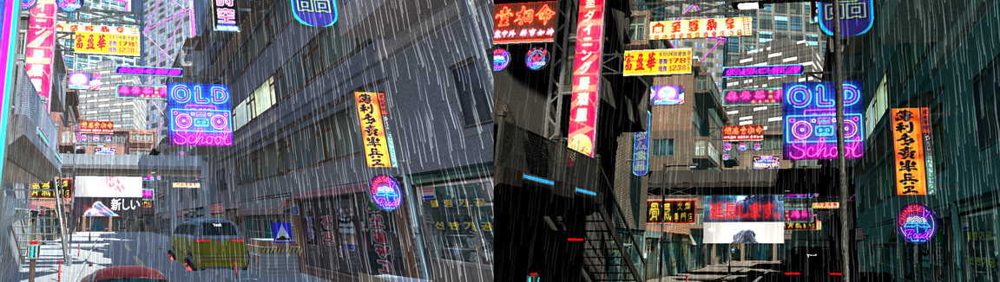

Rain Simulation
Check out the WebGL demoThe project is a course project of DH2323 Computer Graphics and Interaction. It focuses on post-processed rendering of raindrops and visibility calculation to create a cyberpunk scene.
Implementation
Check out the implementation blogWe first developed a rain shader using Unity Post-processor. Then we modeled a cyberpunk city scene in Unity and applied the rain effect to it.
Potential perceptual study
- To study the impact of weather on moods, such as tiredness, stress, etc. by changing stimuli such as sunlight, level of rain, and sound of rain.
- To combine with VR for participants to “walk” or "drive" in the scene when they were sitting, by presetting an automatic moving path in Unity.
- To provide insight for designing game scenes in Cyberpunk genre that aims to create an oppressive atmosphere and immersive experience.
Contribution
This is a group project that I cooperated with another KTH student. In this project, I mainly contributed to the modeling, perceptual experiment design, blog management, report writing, and the LATEX typesetting.